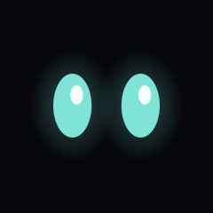

Why it isn't just a flipbook
The character ships as finished PNG frames — but the eyes are baked into the body, so you can't blink with them.
So Wisp is split into layers rebuilt from the geometry source, and the character is never redrawn — only re-composed. Each layer is rasterised once at startup, cropped to its opaque bounds and cached to disk. After that a frame is a fill and about eight blits.
- haloscales 100→130% on the listening pulse
- bodysquashes and stretches on a win
- tip flickerdrifts ±3px on a 1.2s loop
- eyesY-scaled to blink — never an image swap
- mouthopened by live TTS volume
- extrassound rings, thinking dots, z's, brows, blush
The motion spec, exactly
Every number below is quoted from the character's spec sheet and asserted in the test suite. Change a constant and a test fails.
| Float | 6px up and down · 3s ease-in-out |
|---|---|
| Blink | every 4–6s randomised · 120ms · eyes scaled to 0.1 |
| Tip flicker | ±3px · 1.2s loop |
| Listening | glow 100→130% · rings fade out every 0.8s |
| Thinking | 3 dots, bottom to top · 0.4s each |
| Speaking | mouth driven by TTS volume |
| Happy | one squash-and-stretch on entry, then idle float |
| Sleepy | 60% brightness · float slows to 5s · z's drift up |
| Transitions | ~200ms eased cross-fade · no hard cuts |
What you're looking at
This page isn't a video. It's playing the same sprite sheets the phone app
consumes, laid out from sprites.json — so if a loop hitched here,
it would hitch there. Each sheet runs for the least common multiple of
everything moving in that state, which is why the loops are different lengths.
Seamless by construction
Listening's true cycle is 12s and sleepy's is 60s. Rather than truncate and ship a sheet that jumps every repeat, their float is stretched 4–7% to close the loop. Invisible; a jump isn't.
No blink in the sheets
Blink is random every 4–6s. Baked into a 3s loop it stops being a blink and becomes a tic, so it's left to the live renderer.
Fitted, not guessed
The layout was solved against the original renders by sweeping scale and offset — landing on scale 1.5 at (250, 48), with a mean error of 0.03 out of 255.
And on the little round one
A 1.28″ GC9A01 runs eyes-only off the same clock, so both screens blink at the same instant.

The driver situation on a Pi 5 is a dead end in three directions: luma.lcd doesn't support GC9A01 at all, anything built on RPi.GPIO can't work on a Pi 5, and the drivers that turn up in searches are MicroPython.
The answer is the kernel's own gc9a01 overlay, which brings the panel up as an ordinary framebuffer — so it's a plain RGB565 write, with no SPI library and nothing added to the dependency list.
Palette
Run it
# preview it on your laptop — keys 1-6, M fakes the mouth git clone https://github.com/CurlyKojo/Wisp-.git && cd Wisp- pip install -e . wisp-face # on the Pi: venv, warm cache, systemd units ./deploy/install.sh --round